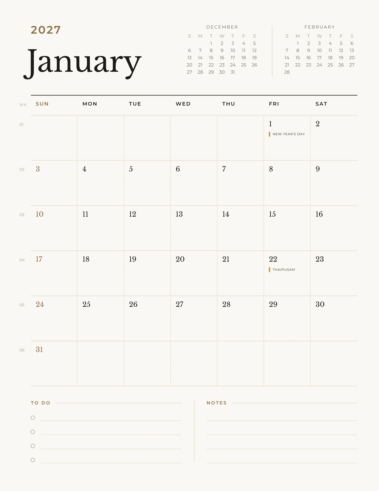

A page for every month
Not a strip under a photo: the whole page is yours to plan on.
Twelve of my photographs, one for every month.
The back
Twelve photographs face the room.
The front
Twelve planner pages face you.
01The planner
A full A5 page for every month. I've scribbled on January, so you can see how much room there is.

Not a strip under a photo: the whole page is yours to plan on.
Big date squares, with weeks that start on Sunday. Dinner's on the 13th.
Malaysia, Singapore or the UK, printed on the day. Personalised copies can mix them, state by state, and add your own dates.
Last month and next, for plans that spill over.
Down the side of every row.
A list and a notes panel at the foot of every month.
02The photographs
Swipe across the calendar to turn a page, or pick a month. Or just keep scrolling.
03A note
I took these over the past year, at home in KL and on the road. I wanted them somewhere I'd see them every day, so I made them into a calendar and printed a few more for friends.
Sim
04Details
05Order
Two copies? RM 10 off the pair.
Order by 30 November, delivered in December. Free delivery within Malaysia.
Order a copy